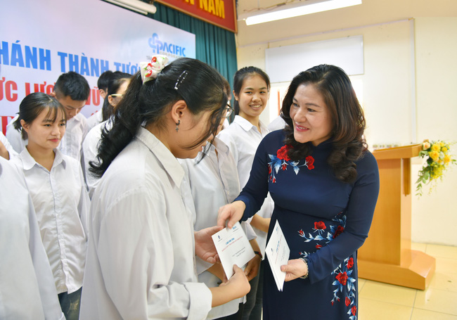

Lễ khánh thành tượng Anh hùng Lực lượng Vũ trang Nhân dân Trinh Tố Tâm
Anh hùng Trịnh Tố Tâm, nguyên Thứ trưởng Bộ Lao động và Thương binh xã hội, sinh năm 1945, tại thôn Mỹ Cầu, xã Đồng Tân, huyện Ứng Hòa, tỉnh Hà Đông (nay thuộc thành phố Hà Nội)
Năm 1965, khi quân đội Mỹ ném bom bắn phá miền Bắc Việt Nam, Anh hùng Trịnh Tố Tâm lúc này còn là học sinh tham gia trong phong trào “Ba sẵn sàng” (Một phong trào thi đua yêu nước của Đoàn Thanh niên trong thời kỳ chống Mỹ, với nội dung là: Sẵn sàng chiến đấu; Sẵn sàng nhập ngũ; Sẵn sàng đi bất cứ nơi nào Tổ quốc cần đến ). Ông đã viết đơn xin gia nhập quân ngũ, tình nguyện vào chiến đấu tại chiến trường miền Nam và được điều động vào chiến trường Quảng Trị – Thừa Thiên.
Từ năm 1967 đến năm 1970, Trịnh Tố Tâm tham gia chiến đấu ở chiến trường Trị Thiên, ông đã chỉ huy đơn vị mình đánh 58 trận, diệt 1.500 tên địch (trong đó có 700 tên lính Mỹ), phá hủy 61 xe quân sự, đánh bật 19 đoàn tầu hỏa, đánh sập 28 cầu, cống. Riêng ông diệt 272 tên địch (trong đó có 185 lính Mỹ), bắn rơi và phá hủy 3 máy bay lên thẳng.
Với những chiến công lớn, Trịnh Tố Tâm đã 53 lần được công nhận là “Dũng sỹ” được tặng thưởng Huân chương Độc lập hạng ba, 3 huân chương giải phóng,13 huân chương chiến công, Huy hiệu Bác Hồ và nhiều huân chương, huy chương khác. Ngày 20-9-1971, Trịnh Tố Tâm được Nhà nước phong tặng danh hiệu Anh hùng Lực lượng Vũ trang Nhân dân.
Việc xây dựng, lắp đặt tượng Anh hùng Trịnh Tố Tâm tại trường THPT Ứng Hòa B nhằm ghi lại công lao đóng góp của một người con quê hương Ứng Hòa và góp phần để tuyên truyền, giáo dục truyền thống lịch sử anh hùng cho các thế hệ trẻ.
Công ty CP tập đoàn Thái Bình Dương là đơn vị đề xuất, thiết kế, trình huyện ủy, UBND huyện Ứng Hòa và các cơ quan có thẩm quyền phê duyệt; tiến hành xây dựng, lắp đặt; Đến nay công trình đã hoàn thành.Thầy và trò trường THPT Ứng Hòa B rất vinh dự được đón nhận; Từ nay nhà trường có thêm điều kiện thuận lợi trong việc giáo dục truyền thống, lịch sử cách mạng của quê hương Khu Cháy, gắn với nhiệm vụ giảng dạy lịch sử Đảng bộ huyện Ứng Hòa cho các thế hệ học sinh.
Tại Lễ khánh thành, Thứ trưởng Nguyễn Thị Hà thay mặt Bộ LĐ-TB&XH tặng 20 triệu đồng cho Quỹ khuyến học trường THPT Ứng Hòa B; gia đình anh hùng Trịnh Tố Tâm và Tập đoàn Thái Bình Dương cũng trao tặng 50 phần quà cho 50 em học sinh tiêu biểu của trường THPT Ứng Hòa B.
Phát biểu tại Lễ Khánh thành, nhà thơ Trần Đăng Khoa cho rằng, việc đặt tượng Anh hùng Trịnh Tố Tâm tại trường Ứng Hòa B không chỉ là một biểu tượng chung chung để tưởng nhớ. "Tôi tin rằng, ở đây, ở mảnh đất đặc biệt này sẽ xuất hiện rất nhiều những Trịnh Tố Tâm trong tương lai, những Trịnh Tố Tâm ấy không phải anh hùng trong đánh giặc mà sẽ là những anh hùng đẩy lùi đói nghèo, lạc hậu, tăm tối và đưa đất nước lên một tầm cao mà ở đó chỉ có lấp lánh ánh sáng của trí tuệ, của lòng nhân ái. Tôi cũng rất mong Hà Nội sẽ có một con đường mang tên Trịnh Tố Tâm ..."- Nhà thơ Trần Đăng Khoa nói.
Dưới đây là một số hình ảnh tại lễ Khánh thành tượng đài Anh hùng Trịnh Tố Tâm:
Các đại biểu về dự Lễ khánh thành tượng Anh hùng Trịnh Tố Tâm
Anh hùng LLVTND Phạm Tuân, nhà thơ Trần Đăng Khoa và các đại biểu
Các con gái của Anh hùng Trịnh Tố Tâm và đại biểu chụp ảnh lưu niệm
Thứ trưởng Nguyễn Thị Hà thay mặt Bộ LĐ-TB&XH trao 20 triệu đồng tặng Quỹ Khuyến học Trường THPT Ứng Hòa B...
Những phần quà của gia đình anh hùng Trịnh Tố Tâm và Tập đoàn Thái Bình Dương cho các em học sinh